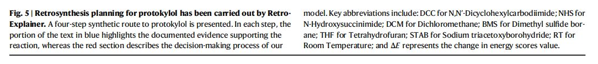

RetroExplainer
论文标题：Retrosynthesis prediction with an interpretable deep-learning framework based on molecular assembly tasks
期刊：Nature Communications(2023)
Abstract
1.现有深度学习逆合成方法的问题
- 大多数深度学习方法都难以解释，如同一个“黑箱”，其中蕴含的insight较少。
2.本文工作
- 提出RetroExplainer，将逆合成任务形式化为分子组装过程
- 分子组装过程包含多个由深度学习引导的逆合成操作步骤
3.模型的核心部件
- 多感知、多尺度图Transformer
- 具有结构感知能力的对比学习
- 动态自适应多任务学习
4.单步逆合成实验结果
- 在12个大规模benchmark数据集上的结果证明了RetroExplainer的有效性，其表现优于现有的SOTA单步逆合成方法
5.分子组装的可解释性
- 赋予模型良好的可解释性，使得决策过程透明化，允许进行定量归因。
6.多步逆合成实验结果
- 成功识别出101条路径，其中86.9%的单步反应是已有文献报道过的。
Introduction
1.分子逆合成任务
- 为目标分子的高效合成，确定一组合适的反应物。
2.基于模板的逆合成方法
- 依赖于反应模板将产物转化为反应物
- 通常使用分子指纹，结合
MLP，以编码分子产物，并推荐合理的模板。 - 举例
Segler等人利用扩展连接性指纹（Extended-Connectivity Fingerprints, ECFPs），结合扩张策略网络来指导模板搜索。Chen等人采用一种类似于单步逆合成预测器的策略，用于神经网络引导下的多步逆合成规划。
- 问题
- 构建反应模板的过程，目前仍然依赖于人工编码或者复杂的子图同构算法，使得在庞大的化学空间中探索潜在的反应模板变得困难。
3.半模板、无模板逆合成方法
- 目的：解决基于模板方法难以探索潜在模板的问题。
- 分子表示：利用分子指纹技术获取分子级别的表示。
- 举例
Chen等人引入FeedForward EBM (FF-EBM)方法，由无模板模型进行补充与完善(complemented by template-free models)。
- 分类
- 基于序列的方法：将分子表示为线性化的字符串。
- 基于图的方法：将分子表示为图结构。
4.基于序列的逆合成方法
- 产物分子的表征：使用线性化记号，如
SMILES(simplified molecular-input line-entry system)。 - 举例
Liu等人引入了Seq2Seq模型，该模型包含双向长短时记忆（LSTM）编码器和解码器以进行逆合成转换。Karpov等人针对逆合成分析调整了Transformer架构的学习率调度策略，并采用快照学习方法。Tetko等人提出一种基于Transformer的逆合成模型，通过SMILES增强提高了性能。- 随着预训练-微调范式的兴起，
Irwin等人提出了MolBART，利用大规模自监督预训练，加速逆合成任务的收敛。
- 方法局限性
- 线性化的分子表示方式（如SMILES）难以直接探索结构信息和原子性质，这些内容对于逆合成分析至关重要。
- 基于
SMILES的分子表示方法语法严格，语义有效性不足，容易导致频繁出现无效语法。
- 解决方法
- 其他一些方法被提出，以避免无效字符串的生成，或嵌入更为丰富的结构信息。
5.基于图的逆合成方法
- 两阶段范式实现
- 反应中心预测（
RCP, Reaction Center Prediction） - 合成子完成（
SC, Synthon Complesion）。
- 反应中心预测（
- 应用——正向反应预测
Jin等人将其应用于正向反应预测，提出使用Weisfeiler-Lehman同构测试[30]图学习来预测反应结果。
- 基于
GNN框架的模型发展- 随着
GNN的发展，许多基于GNN的框架出现于逆合成领域，并且在性能上取得了显著的提升。 Shi等人提出G2G框架，利用关系图卷积网络（R-GCN）进行RCP，并结合强化学习进行SC。Yan等人提出的RetroXpert应用了图注意力网络（GAT）的变种进行RCP，以及基于序列的Transformer进行SC。Somnath等人提出的GraphRetro为两个阶段设计了两种消息传递神经网络（MPNNs）。Dai等人提出GLN方法，利用反应模板连接产物和反应物。
- 随着
- 传统基于
GNN方法的问题- 主要关注分子的局部结构，忽略了长距离特征（如范德华力）的影响。
- 问题解决
Ying等人提出Graphormer，引入了基于最短路径的方法进行多尺度拓扑编码。
- 直接模拟图变化的方法以外的其余方法
- 其他基于图的方法通过翻译反应物，以预测图变化。
6.现有逆合成方法的问题
- 信息表征的不足
- 基于序列的方法：处理分子时，丧失先验信息。
- 基于图的方法：忽视顺序信息、长距离特征。
- 可解释性差
- 现有模型的决策机制尚不清晰，极大限制模型可靠性与实际应用价值。
- 无法解释模型的工作原理，或提供实质性的
insight。
- 单步逆合成、反应物不易获取
- 大多数现有方法侧重于单步逆合成预测，能够生成看似合理，但可能不易购得的反应物，
- 通常伴随手工筛选预测结果的繁琐过程。
- 从产物到容易获得的反应物，进行多步逆合成预测和路径规划，更有实际意义。
7.论文贡献
-
提出
RetroExplainer——一种结合化学知识、深度学习引导的分子组装方法，用于进行具有量化可解释性的逆合成预测。 -
贡献一——构建强大、信息丰富的分子表征
- 设计一种多感知、多尺度图
Transformer（Multi-Sense Multi-Scale Graph Transformer, MSMS-GT），用于通用的分子表征学习。 - 使用动态适应性多任务学习（
Dynamic Adaptive Multi-Task Learning, DAMT），以实现平衡的多目标优化。 - 使用结构感知对比学习（
Structure-Aware Contrastive Learning, SACL），以捕捉分子结构信息。 - 结果：
RetroExplainer在包括三个常用数据集（USPTO-50K、USPTO-FULL和USPTO-MIT）在内的共12个大规模benchmark数据集上表现优秀。
- 设计一种多感知、多尺度图
- 贡献二——良好的可解释性
- 引入分子组装过程
- 提供透明的决策过程。
- 生成能量决策曲线，将预测分解为多个阶段，并允许在子结构级别进行归因分析。
- 有助于理解“反事实”预测，揭示数据集中潜在的偏置。
- 引入可解释逆合成预测
- 提供更细致的参考信息（例如：对某一特定化学键断裂的置信度），启发研究人员设计定制化的反应物。
- 引入分子组装过程
- 贡献三——确保预测产物的可合成性、避免手动筛选候选反应物
- 做法：整合
RetroExplainer模型与Retro算法。 - 结果：对
101种复杂药物分子进行合成路线，86.9%的单步反应都能在文献报道中找到对应。
- 做法：整合
Results
一、基于USPTO数据集的性能比较
1.实验设置
- 三个常用
USPTO的benchmark数据集：USPTO-50K, USPTO-FULL, USPTO-MIT。 - 比较：与
21种逆合成方法进行对比。 - 数据集分割方法：与以往工作相同的随机分割方法。
2.USPTO50K数据集实验结果（表1）

- 性能评估标准：
top-k精确匹配准确度，k分别设置为1, 3, 5, 10。 RetroExplainer实验结果- 在
5项指标上，取得最优水平。k = 1, 3, 5时，针对已知反应类型。k = 1, 3时，针对未知反应类型。
k = 10的实验结果- 未达到最优精确度
- 在已知/未知反应类型的条件下，精确度接近最优模型
LocalRetro，与其差距分别为0.2%和1%。
- 综合结果（不同
top-k下的平均精度）- 分别根据是否提供反应类别信息，综合考虑
top-1, top-3, top-5, top-10预测的平均精度，RetroExplainer均获得最高精确度。 - 相比于第二名模型（已知反应类型为
LocalRetro，未知反应类型为R-SMILES），平均精度分别改进1%和0.1%。
- 分别根据是否提供反应类别信息，综合考虑
- 在
3.现有数据分割方法的问题及解决方案
- 骨架评估偏差与信息泄露
- 在随机分割的数据集中，相似分子可能同时出现于训练集和测试集中，容易导致训练数据的信息泄露，进而使模型评估产生偏差。
- 解决方案
- 采用
Kovács等人提出的基于Tanimoto相似性的数据分割方法。 - 考虑
3种相似度阈值（0.4, 0.5, 0.6）和3种测试集分割比例（0.2, 0.25, 0.3），由此产生了九种基于Tanimoto相似性的数据集。 - 在上述
9个数据集上，将RetroExplainer与R-SMILES和LocalRetro两种现有的最优方法进行比较。
- 采用
- 结果（图
2）
- 针对上述
9个数据集中的大部分数据集，RetroExplainer在top-1, top-3, top-5, top-10精确匹配准确度上，均超过baseline方法。
- 针对上述
- 结论
- 进一步证明了
RetroExplainer的有效性、健壮性。 - 相比现有方法，
RetroExplainer在处理未曾见过的分子骨架结构时，能展现出更强的领域适应性。
- 进一步证明了
4.大型数据集USPTO-Full和USPTO-MIT的实验结果
- 结果（表
2）

- 对于两个数据集的
4中评价指标（top-1, top-3, top-5, top-10精确度）中，RetroExplainer均以较大优势取得最佳性能。 USPTO-FULL数据集：RetroExplainer在top-1, top-3, top-5, top-10精确度上，分别比第二名的R-SMILES高出2.5%, 4.1%, 2.7%, 2.8%。USPTO-MIT数据集：结果类似。
- 对于两个数据集的
- 结论
- 在更大规模数据集的评估条件下，
RetroExplainer与以往的最先进相比方法，更为有效和稳定。 RetroExplainer更适合大规模训练场景的应用，具有更大潜力。
- 在更大规模数据集的评估条件下，
- 补充研究（后文）
- 消融研究：讨论尺度信息、增强策略模块的有效性。
- 案例研究：说明
MSMS-GT如何聚焦于分子的多尺度结构。
5.模型SOTA性能的解释
RetroExplainer取得更有表现的可能原因：数据建模的独特方法。- 两种分布的同时捕捉
- 提供产物分子图时，反应中心（
RC, Reaction Centers）和离去基团（LG, Leaving Groups）之间的联合条件分布。- 通过联合分布，考虑离去集团对反应中心的影响，使得模型可以学习信息更丰富的表示。
- 在确定反应中心、离去集团和产物后，离去集团之间连接关系的条件分布。
- 提供产物分子图时，反应中心（
- 效果
- 增强模型泛化能力（尤其是涉及多个反应中心和离去集团的情形）
- 避免了由于多个离去集团（或反应中心）问题，而产生的过度迭代需求。
- 通过学习合成子连接关系的条件分布，
RetroExplainer能够有效适应更庞大、更复杂的数据集。
二、RetroExplainer模型架构及其可解释的insight
1.深度学习引导的六阶段透明决策过程（图3a）
- 原始产物（
P, Product） - 离去基团匹配（
S-LGM, Leaving Group Matching） - 初始化（
IT, Initializing） - 离去基团连接（
S-LGC, Leaving Group Connecting） - 反应中心键变化（
S-RCP, Reaction Center Bond Changing） - 氢原子数量变化（
HC, Hydrogen Number Changing）
2.决策阶段的“能量分数(energy score)”
- 各阶段依据对最终决策的贡献，生成相应的能量分数。
- 能量分数来源：由经过训练的模块计算得出。
- 离去基团匹配模块（
LGM, Leaving Group Matching） - 带氢原子的反应中心预测模块（
RCP-H, Reaction Center Prediction for Attached Hydrogens） - 键反应中心预测模块（
RCP-B, Reaction Center Prediction for Bond） - 离去基团连接模块（
LGC, Leaving Group Connecting）
- 离去基团匹配模块（
- 能量分数计算细节：见补充信息笔记
4。
3.六阶段决策过程的具体描述
- 从
P阶段出发，将该阶段的能量分数初始化为0。（在图3a中记为\(E\)） - 在
S-LGM阶段，根据LGM模块给出的概率预测，选择一个离去基团（LG），并基于LGM的概率预测，为该离去基团赋予一个能量分数。 - 计算
IT阶段的能量分数。该步骤通过添加S-LGM阶段所选离去基团的能量，以及由RCP-H、RCP-B和LGM模块各自预测出的相应事件的概率而完成。 - 在
LGC和RCP阶段，使用动态规划算法扩展搜索树中的所有可能结点。选择了概率大于设定阈值的事件，并据此给定各阶段的能量分数。 - 针对每个原子，调整氢原子数量和形式电荷，确保修改后的分子图遵循价键规则；最后，根据氢原子数量变化（
HC, Hydrogen Number Changing）的成本，计算出最终的能量分数。
4.模型决策过程的作用与解释
RetroExplainer生成的决策曲线的作用- 揭示模型为何可能会做出“错误”（化学上合理，但与数据集中记录的实际答案不符）的预测
- 有助于识别训练数据集中的潜在偏差(
bias)。
- 举例（图
3b）- 现象一
- 通过胺脱保护法合成目标产物的“正确”答案在模型中排名第
6，排名第1的预测则是C-N偶联反应。
- 通过胺脱保护法合成目标产物的“正确”答案在模型中排名第
- 解释
- 经研究发现，氢原子数量变化（
HC, Hydrogen Number Changing）阶段是导致能量分数差异的关键阶段。 RetroExplainer在HC阶段，倾向于预测胺基氢原子数量增加的反应物，表明模型在类似的分子骨架中存在HC偏向性。
- 经研究发现，氢原子数量变化（
- 现象二
- 在前
12个预测的LGC至RCP阶段区间，观察到两条斜率不同的直线，表明RCP阶段中，两种不同类型的反应中心（RCs）有不同的反应模式，即C-N键是否断裂（进行合成还是分解）。
- 在前
- 解释
RetroExplainer理解到，合成模式有利于降低能量分数；相应地，在LGC至RCP区间内的直线斜率为负。- 上述内容解释了去除苯环中氢原子的困难反应排在第二位的原因。
- 与排名第一、更容易合成目标产物的反应相比，苯环中移除的氢原子导致的能量差异较明显，表明决策曲线与反应困难程度之间存关联。
- 现象一
- 更多
RetroExplainer性能示例：见补充信息笔记5。
5.分子组装过程的子结构(substructure)归因能力
- 子结构归因能力
- 通过针对各阶段对最终能量得分的贡献比例的分析，分子组装过程能够在子结构(
substructure)层级实现归因能力。
- 通过针对各阶段对最终能量得分的贡献比例的分析，分子组装过程能够在子结构(
- 子结构归因能力的必要性
- 在涉及多个反应中心（
RCs）的情况下，多个化学键的数量变化，或者多个氢原子的变化，往往会合并到同一阶段，从而造成某种程度的不确定性。（图3c展示了六个有代表性的相关实例）
- 在涉及多个反应中心（
- 归因分析一——能量得分与反应难易程度的关联
- 现象：通过对比排名第一、第二的预测（图
3c中分子1、分子2），可以发现能量得分可能与反应的难易程度（例如选择性）相关。 - 原因：尽管
I:33与C:26之间的连接不利于能量的减少，但在C:26处添加一个氢原子所导致的能量增长约为前者的13倍（分别为13.5和1.02）。 - 以往研究的结论：
C–N交叉偶联反应通常涉及特定催化剂，并面临选择性问题。 I:33减弱了这种选择性问题，正与分子1的预测能量分数小于分子2的事实相对应。
- 现象：通过对比排名第一、第二的预测（图
- 归因分析二——正确答案能量得分被高估的原因
- 比较分子
3、4和5可得，正确答案的能量得分被高估的原因是，模型倾向于断裂C:26和N:27之间的化学键。 - 这一做法既能带来
5.40的能量收益（源自化学键断裂），又能因在N:27处增加一个氢原子而导致能量得分降低9.95。这两种形式的能量降低完全抵消了C:26处氢原子数增加所带来的能量增加影响。 - 因此，来自分子3的正确答案排名在分子
2和分子5的预测之后，因为它未能从C:26和N:27化学键断裂带来的能量减少中受益。
- 比较分子
- 归因分析三——空间位阻对模型推理的影响
- 现象：分子
4、分子6的分子结构相同，但预测出的能量分数不同。二者的唯一差别是，离去基团（LG）连接到了一对对称但编号不同的氮原子上。分子6的能量分数排名为21位。 - 原因
- 尽管这导致了在分子
6的预测中N:27和N:30处氢原子数量的变化，但它们相互抵消，对能量值总效应的影响仅为-0.53%。 - 相比之下，最重要的因素是由
C:33−N:30和C:33−N:27形成的化学键所引起的能量变化；而前者导致的能量变化几乎只有后者的十分之一。 - 这是因为后者的连接发生在化学键断裂之前，而
C:30与N:27之间的连接相对于N:30而言，会造成更大的空间位阻，最终导致能量增加。
- 尽管这导致了在分子
- 现象：分子
6.RetroExplainer对其他方法预测结果的重新排序
- 通过采用如图
3a所示基于能量的过程，RetroExplainer还可以对其他现有方法作出的预测进行重新排序。 - 重新排序算法伪代码：见补充信息笔记
6。 - 实验设定
- 选取
3种不同的逆合成方法（RetroXpert, GLN, NeuralSym）生成的预测结果，使用RetroExplainer进行重新排序。 - 选择原因：预测结果相对容易获取。
- 预测结果选取：对于每个目标产物，挑选前
50个预测结果进行重新排序；针对许多目标产物的预测结果不足50个的问题，引入一种基于平均百分比排名的评估策略。
- 选取
- 结果
- 重新排序后的
top-1, top-3, top-5, top-10准确率结果如图4所示。
- 重新排序后的
- 实验结论
- 重新排序后，预测准确率取得显著提高。
RetroExplainer具有强大的重新排序能力，能够改善其他已有方法的预测结果。
三、RetroExplainer应用于多步逆合成预测

- 将RetroExplainer模型与Retro*算法、可购买分子列表相结合，用RetroExplainer替换了Retro的单步模型。
- 以protokylol（一种用于支气管扩张剂的β-肾上腺素受体激动剂）为例，说明RetroExplainer提供的解释。（图5）
- RetroExplainer为protokylol设计了一条四步合成路线。
- 决策过程的能量得分揭示了支持RetroExplainer做出相应预测的关键子过程。
- 方案的实用性
- 许多提出的反应未能找到文献中的直接对应结果，但能发现具有高产率，且与
RetroExplainer提出反应相匹配的类似反应。
- 许多提出的反应未能找到文献中的直接对应结果，但能发现具有高产率，且与
- 提供了包含
176个单步的101个路径规划案例，其中153个单步预测可以通过SciFindern引擎搜索40找到相似反应模式。 - 实验设置、多路径规划结果及文献检索发现的更多详细信息：见补充信息附录7、补充数据1和补充数据2。
四、反应类型对实验的影响
- 反应类型信息的注入方式
- 给出反应类型时，向
super node中添加额外嵌入。 - 经\(L\)个消息汇聚层后，
super node被提取为图级别的表征。
- 给出反应类型时，向
-
（表
1）引入反应类型后top-k准确率的提升
-
反应类型影响RetroExplainer性能的机制探究
- 根据隐藏特征来源（最后一个
RCP层/最后一个LGM层）、是否了解反应类型，提取4种类型的隐藏特征。 - （图6）反应类型对隐藏特征的影响
- 方法：使用
t-SNE（t分布随机邻居嵌入）对反应类型标签进行着色，以展示压缩隐藏特征的分布情况。 - 结论
- 相比于不受反应类型限制的情况，反应类型对产物隐藏表征施加了更为规范的约束。
- 约束对反应中心（
RCs）的定位过程、离去基团（LGs）的匹配过程进行增强，从而提高了整体性能。
- 根据隐藏特征来源（最后一个
Discussion——RetroExplainer局限性与未来研究展望
- 模型对离去基团(
LG)预测能力的局限性- 预测罕见
LGs性能受限LGM模块是基于预先收集的LGs数据库的预测分类器，简化了从补充信息附录3中的方程(S3.5)生成LGs的困难，并通过强先验保证了LGs的合法性（即所有LGs均来自预收集的数据库）。- 受到训练集质量的根本限制，
LGM方法在生成稀有LGs方面的灵活性有限，这是许多数据驱动模型共同面临的挑战。 - 即使是基于翻译的模型，在预测常见
LGs以便生成未曾见过的LGs方面也不够健壮。
- 模型对常见
LG的偏差- 尽管模型采用了如
SACL等策略，使得LGM模块能够在重新排序外源反应物模式期间，从数据库中找到与未见LGs相似的LGs作为代理（参考补充信息附录6中的算法），并扩大LGs数据库（在USPTO-FULL数据集中，作者收集了约7万个LGs），但仍无法完全消除这种偏向于常见LGs的偏差。 - 案例展示：见补充信息附录
9。
- 尽管模型采用了如
- 有前景的改进技术
- 对
LGM进行预训练 - 元学习
- 主动学习
- 数据增强
- 上述技术有望改善模型在处理罕见化学结构片段（即
LGs）预测问题时的性能和适应性。
- 对
- 预测罕见
- 决策过程灵活性受限
- 本实验涉及的分子组装过程
- 作者在逆合成预测中提出了一种类似于
SN2分子组装的过程，以生成带有能量的决策行动。 - 上述过程较为固定，虽然确实有效，但一些决策行动并不直观地符合其他不同的反应类型。
- 例如：没有明确
LGs（离去基团）参与的特殊反应类型，可能直觉上更适合SN2机制（案例：见补充信息附录10）。 - 对于不遵循
SN2机制的其他多种反应类型，当前方法可能不够灵活。
- 作者在逆合成预测中提出了一种类似于
- 可能的改进方法
- 引入其他反应机制
- 引入环加成反应、消去-加成反应等机制，反应机制可根据实际情况灵活选取，以设计更加灵活的决策过程。
- 增加反应机制选择模块
- 建议增加一个由
LGM（离去基团预测模块）和RCP（反应中心预测）置信度决定的机制选择模块，以判断哪种类型的机制更适合用来产生更易于人类理解的解释。
- 建议增加一个由
- 改进效果
- 模型能更好地适应各种不同类型的化学反应，并且生成的人工智能解释将更为贴近化学家的思维习惯，以及实际反应机制。
- 引入其他反应机制
- 本实验涉及的分子组装过程
- 无法进行细粒度预测
- 无法预测的详细反应信息
- 反应操作
- 温度
- 反应时间
- 反应条件预测已成为自动化合成平台发展过程中愈发紧迫的挑战，未来研究有待探索。
- 无法预测的详细反应信息
Methods
一、问题定义
1.基于图的逆合成预测
- 化学反应的一般表示
- \((\{G_{p;i}\}_{i = 1}^{N_p}, \{G_{r;j}\}_{j = 1}^{N_r})\)，其中，\(G_p\)表示产物图，\(G_{r}\)表示反应物图。
- 反应推理模型
- \(f_{\theta}(\{G_{p;i}\}_{i = 1}^{N_p}, \{G_{r;j}\}_{j = 1}^{N_r})\)，其中\(\theta\)是一组可学习的参数。
- 前向推理模型
- \(f_{\gamma}(\{G_{p;i}\}_{i = 1}^{N_p}, \{G_{r;j}\}_{j = 1}^{N_r})\)
- 逆合成模型
- 只有主产物输入，作为先验条件忽略了其余副产品。
- \(f_{\gamma}(\{G_{p;i}\}_{i = 1}^{N_p}, \{G_{r;j}\}_{j = 1}^{N_r}/\{G_{p:m}\}|\{G_{p:m}\})\)，其中\(\{G_{p:m}\}\)表示主产物。
- 事实上，逆合成模型比前向模型更加复杂，前向模型的表现总体好于逆合成模型。
2.反应中心(Reaction Center, RC)和离去集团(Leaving Group, LG)
- 反应中心
- 子图\(G_c = \{(u, v), e_{uv}|e_{uv} \in G_{p}, e_{uv} \notin G_{r:j}, \forall G_{r:j} \in \{G_{r:j}\}_{i = 1}^{N_r}\}\)，其中\((u, v)\)表示原子对，\(e_{uv}\)表示原子对之间的边。
- 合成子
- 一组图，根据反应中心，对产物图进行变换而成。
- 合成子通常并不在化学上有效，后续过程通过在合成子上添加离去集团(
LGs)，形成最终反应物。
- 离去集团
- 反应物的子图，包含了并未出现于主产物之中的反应物原子和及其关联边。
3.基于GNN的Transformer
- 基于
GNN的Transformer的数据流- 一个句子，可以视为带有语义边(
semantic edge)的全连接图。 - 单词(
word tokens)作为结点进行处理。
- 一个句子，可以视为带有语义边(
- 多头注意力(
MHA)- \(m_a^{(l)}:= \sum_{w' \in N_{w}}\tilde{a}_{w'w}S_{w'}^{(l - 1)}W_v, m_{w}^{(l)}:= \tilde{a}_{ww}S_{w}^{(l - 1)}W_V \cdots (1)\)
- \(\tilde{a}_{w'w} = SOFTMAX(\frac{S_{w'}^{(l - 1)}W_Q(S_{w}^{(l - 1)}W_K)^T}{\sqrt{d_{k}}})\cdots (2)\)
- \(S_{w}^{''(l)} = COMBINE(m_a^{(l)}, m_{w}^{(l)}) := CONCAT(\{m_a^{(l:k)} + m_{w}^{(l:k)}\}_{k = 1}^{n_{head}})W^O\cdots (3)\)
- 上式中：\(N_{w} = S/{w}\)是结点\(w\)的语义邻域集合；\(d_{k}\)是\(W_k\)的隐藏维度数目。
RetroExplainer对基于GNN的标准Transformer的改进- 标准
Transformer无法处理拓扑空间中的边。 RetroExplainer中的Transformer解决了上述问题。
- 标准
二、RetroExplainer框架
1.模型架构列举
（1）MSMS-GT, Multi-Sence and Multi-Scale Graph Transformer组件
（2）DAMT学习组件
（3）可解释的决策组件
（4）预测与路径规划组件
2.MSMS-GT, Multi-Sence and Multi-Scale Graph Transformer（多感知、多尺度图Transformer）组件
MSMS-GT模块（图1b右侧）
- 模型利用多感知、多尺度化学键嵌入策略，以及原子拓扑编码策略，以捕捉化学上重要的信息。
- 前两个编码器产生的分子向量通过多头注意力(
MHA)机制进行混合。
3.DAMT学习模块（图1b左侧）
- 产出的隐藏分子表示同时传送给三个特定任务头：RCP(Reaction Center Prediction)、LGM(Leaving Group Matching)和LGC(Leaving Group Completion)。
4.动态适应多任务学习(DAMT, Dynamic Adaptive Multi-Task Learning)技术（图1c）
- 目的：平等训练每个子任务。
- RCP, Reaction Center Prediction：识别化学键和各个原子连接的氢原子个数变化情况。
- LGM, Leaving Group Matching：对于产物、产品离去基团数据库中的离去基团进行匹配。
- LGC, Leaving Group Connection：对离去基团和产物片段进行连接。
5.决策组件（图1d）
- 使用由5个逆合成动作，以及决策曲线能量分数组成的决策过程，将产物变换为反应物。
6.启发式树搜索算法
- 树搜索算法基于单步逆合成预测，融入最后一个组件，以发现高效的合成路线，使用透明的决策流程，同时保证反应物的可获得性。
三、多感知多尺度图Transformer(MSMS-GT)组件的细节
1.原子嵌入表示与拓扑嵌入表示(Atomic and Topological Embedding)
- 给定反应数据的
SMILES表示\(S_r\)，产物的相应分子图\(G_{p} = (V, A)\)得到构建，其中原子被视为一个规模为\(N\)的结点集合。 - 将原子视为单词(
word tokens)，构建语义域(semantic domain)的全连接图。 - 拓扑嵌入表示的引入
- 额外添加拓扑嵌入表示，目的：衡量原子在图的空间域中的重要性。
- 用拓扑嵌入表示替代传统位置编码，以免破坏最初的排列不变性。
- 使用结点的度数，用以描述原子的空间重要性。
- 初始化结点特征
- \(h_{\nu}^{(0)} = \sum_{i = 1}^{K_a}\phi_{x_i}(x_i) + \phi_d(deg(\nu))\)
- 带有不同下标的\(\phi(\cdot)\)：分别表示不同的嵌入函数。
- \(x_{i}\)：第\(i\)个原子特征（例如：原子序数、形式电荷等）。
- \(deg(\nu) \in \mathbb{R}\)：表示原子\(\nu\)的总度数。
- 引入总度数的作用：作为强大的先验知识，使得注意力分数可以同时捕捉语义和空间信息。
2.多感知、多尺度化学键嵌入表示
- 引入化学键信息的作用：提高图的表达能力。
- 化学键性质编码
- 对于\(\sigma/\pi\)轨道、共轭键等化学键性质进行编码，编码后使用邻接矩阵\(\{A_{i} \in \{0, 1\}^{N \times N}\}_{i = 1}^{K_b}\)记录。其中，\(K_b\)是不同的感知。
- 不使用基于类型的方法进行边特征嵌入表示。
- 原因：直接揭示隐藏在化学键类型背后的反应相关属性（如：是否在环中），能提高模型对复杂反应类型的理解能力。
- 不同的化学键类习惯可能共享相同属性。
C-C, C=C均具有\(\sigma\)轨道。- 传统化学键类型编码无法表达这一信号。
- 化学键信息融入图数据
- 受到公式\((2)\)的启发（对基于原子对的语义边进行学习），作者考虑将化学键信息作为分子结构的一种先验。
- 将化学键信息添加到\(SOFTMAX(\cdot)\)之前的语义分数。
- 化学键特征嵌入公式
- \(m_{a}^{(l)} = \sum_{u \in N_{v}}\tilde{a}_{uv}h_u^{(l - 1)}W_V, m_{V}^{(l)} = \tilde{a}_{vv}h_{v}^{(l - 1)}W_V \cdots (5)\)
- \(a_{uv} = \frac{h_{u}^{(l - 1)}W_Q(h_v^{(l - 1)}W_k)^T}{\sqrt{d_k}} + \sum_{i}^{K_b}\phi_i(A_{i; uv}), \tilde{a}_{uv} = SOFTMAX(a_{uv}) \cdots (6)\)
- 上式中，\(N_{v} = V / \{v\}\)是原子\(v\)的邻域集合。
3.空间特征的嵌入表示
- 上述模型架构的表达能力仍然不如简单
GNN，简单GNN过分关注空间域中的1跳邻居。 Graphormer的解决方案- 使用一种最短路径嵌入表示。
- 全局距离\(A_g\)的计算
- 路径距离：由化学键长度进行计算
- 三维距离：由
MMFF优化得到的构象进行计算
- 引入全局距离嵌入表示后的
Transformer公式- \(a_{uv} = \frac{h_u^{(l - 1)}W_Q(h_v^{(l - 1)}W_K)^T}{\sqrt{d}_{k}} + \sum_{i}^{K_b}\phi_i(A_{i; uv}) + RBF(A_{g;uv}) \cdots (7)\)
- 高斯径向基函数：\(RBF(A) = \frac{exp(-(A - \phi_{mean})^2)/2\phi_{std}^2}{\sqrt{2\pi} \phi_{std}} \cdots (8)\)
- 全局距离的特点
- 引入空间信息，但总体上忽略了化学键信息。
- 原子环境(
AE, Atom Environment)- 将数个原子视为一个
token。 - 对于逆合成预测发挥了重要作用。
- 将数个原子视为一个
- 最终的注意力分数公式
- \(bias_{uv} = \sum_{i}^{K_b}\sum_{j = 1}^{K_r} \phi_i(A_{i; uv}^j) + RBF(A_{g;uv}) \cdots (9.1)\)，第一项为局部项，第二项为全局项。
- \(a_{uv} = \frac{h_u^{(l - 1)}W_Q(h_v^{(l - 1)}W_K)^T}{\sqrt{d_k}} + bias_{uv} \cdots (9.2)\)
- \(A_i^j\)：矩阵\(A_i\)的\(j\)次幂矩阵，描述了半径为\(j\)的原子环境。
- \(K_r\)：原子环境的最大半径。
- 局部项：\(\phi_i(A_{i; uv}^j)\)
- 全局项：\(RBF(A_{g;uv})\)
- \(A_{i}^j, A_i \in\{0, 1\}^{N \times N}\)：记录了各原子之间距离为\(j\)的路径数目，从而对半径为\(j\)的原子环境进行了描述。
- 最终注意力公式（公式\((9)\)）的理解
- 利用自注意力机制，学习结点特征之间的语义关联性。
- 引入多层级环境\(\{A_i^j\}_{j = 1}^{K_r}\)，以及多感知嵌入表示\(\{A_{i}\}_{i = 1}^{K_b}\)，以在局部尺度充分利用丰富的化学键信息。
- 添加原子的全局嵌入表示，以在空间域捕捉全局范围。
- 结论：
RetroExplainer的表达能力至少与GNN等量齐观；此外，全局项\(RBF(A_{g;uv})\)允许了三维距离嵌入表示的引入（本实验结果：引入三维距离嵌入表示不是必要的）。
四、特定任务头(Specific Task Heads)、决策组件
1.特定任务头
- 设计
3个不同的特定任务头以满足不同需求。 RCP(Reaction Center Prediction)：在判定反应中心时，针对各个化学键的变化给出一个概率分布。LGM(Leaving Group Matching)：在产物和各个候选离去基团间，计算相容性分数。